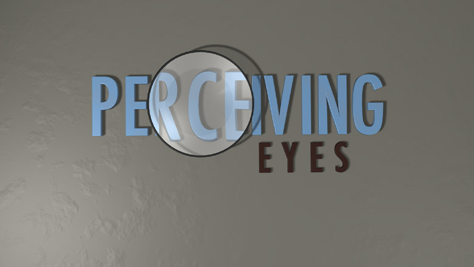

PerceivingEyes
Art is everywhere and in everything. It all depends upon the one to perceive it.
Pramod N. MedichalamStatement
Conceptualizing art according to the perceptions of varied audiences, and justifying that art is everywhere and in everything: it all depends upon the one to perceive it.
A stone that has been lying on the pavement for ages never grabs attention as a piece of art. But the same stone when picked and kept in the center of a museum, what makes the audience interpret it as a piece of an art?
Scope
Since art and communication are so broad in perspective, I am restricting the terms to a limited subject. When I mention art, I mean it as a visual art. When I mention communication, I mean it as a visual communication throughout this entire paper. This paper also does not go through the in-depth definitions and understandings of aesthetics.
Concept · Zones of interpretation
Three audiences.
Four zones.
What makes a person understand whether something is art or not depends upon the communication he comprehends. The thesis sorts audiences by their behavior towards artwork, and maps where each one ends up.
Principles in play while understanding an art
- Initially all audiences exposed to a certain form of art are in the Zone of Introduction.
- Audiences who are interested in understanding a certain form of art head toward the Zone of Modulation. They are generally Value Based ones.
- Audiences who are not interested tend towards the Zone of Digression. Conventional audiences are mostly in the Zone of Digression.
- To understand art, every audience has to pass through the Zone of Modulation to enter the Zone of Perception.
- An audience member can understand the piece of work as art only when he is in the Zone of Perception. It is only the Proficient audiences who can be there.
- There can be audiences who would try to understand, but do not yet agree it is art. They could not pass through the Zone of Modulation, and stay in the Zone of Introduction.
- Conventional audiences can never get into the Zone of Perception. It is only the Value Based and Proficient audiences who can.
- The Value Based audiences, the moment they pass through the Zone of Modulation, change to Proficient ones.
- When the Value Based ones cannot pass through the Zone of Modulation, they stay in the Zone of Introduction: they do not understand the art but like the look and feel of it.
- An audience can be Proficient in one field of art and not Proficient in another field of art.
Is this pen a piece of art?
Anything in this world can be an art for some audiences but not for others. When I mentioned this to a committee, one of the gentlemen asked whether the pen I was holding was a piece of art. It was indeed a very good question.
There are so many things involved in designing a pen: firstly, the chemical compositions of the body and the ink; secondly, the product design; thirdly, the aesthetic look; and finally the way it writes. The one among them who gets the right communication, feels the pen to be a form of art.
Methodology
From origin
to formula
- 01Art origin and its development
- 02Communication: information (feeling of understanding) transfer from Source (art) to Receiver (audience)
- 03Importance of communication in art
- 04Statement
- 05Scope
- 06Role of communication on varied audience
- 07Varied audience interpretations on same piece of art
- 08Principle factors affecting the communication of an art piece
- 09Perceiving Eyes formula
- 10Conclusion
- 11Visual Reference
Visual · Motion graphics reference
Days in a Week
This visual piece acts as a reference to the thesis. To establish the concept in reality, it adopts “Days in a Week” from Hindu Mythology: each day is named for the planet that first exerts its influence on the earth after sunrise. Each was visualized as motion graphics according to its importance and behavior, kept as abstract as possible to elicit wider perceptions and interpretations.

Paper
IIntroduction
A stone that has been lying on the pavement for ages never grabs attention as a piece of art. But the same stone when picked and kept in the center of a museum, what makes the audience interpret it as a piece of an art?
An interactive installation performance held at the local Telfair Museum in Savannah experienced some interesting facts. The show title was “The Water’s Way” and it was mainly about exploring the people and the events that have shaped and been shaped by the Savannah River for over 400 years. It was a collaborative performance of international artists in the fields of video, sound and word, utilizing the high-end digital technology in the form of real time, sound-driven animation (Houdini Software), and live video mixing and manipulation (VDMX).1
The show mainly contained live music with a background of storytelling. It also contained two huge screens placed in parallel: one showing the historic events, artistically blended into a motion graphic piece, and the other showing the visuals, synchronized to the music, creating an atmosphere of persuasion. The entire show had the harmony of the title – “The Water’s Way”. The show was indeed overwhelming and it created a new art form from the fusion of these various forms of art. It was a triumph of achievements in this present day of digital media.
The audience present in the museum was diverse, but the show was not meant for a general viewing audience. Hence, very few in the audience enjoyed the show. Some gained interest in the new venture but some developed a very bad opinion, due to the technical difficulties. The computers regularly crashed and one of the projectors broke. This lost the momentum and the progression of the show. There definitely were some people (including me) who got over this turmoil and fatigue and got back into the show.
There were varied perceptions of the various forms of art. Some felt the music alone was good. Some liked the motion graphic piece. Some felt the programmed Houdini animation was an art form. Very few felt the storytelling was a form of art. I personally felt the collaborative work itself created a new form of art.
But what makes something an art? Art has never been lacking a proper definition, but it has never been what it is today. It has always had a rapidly changing definition. Today what we may perceive as art might not have been thought so a few years ago. “Art is constantly regenerated like the living organisms of social and cultural structures, which are always subject to modification, as a result either of internal growth or of external pressures.”2 In this paper we will look at art and its audiences, in their different zones of perception.
Currently, culture, tradition and language barriers between different nations and individuals have narrowed with the progress in transport and communication. After the two world wars, there has been an overwhelming technological breakthrough. The developments in printing, moviemaking and television are enormous and there are specialized media and fields for the arts of publicity and entertainment. All this resulted in greater understanding of art and its interpretation, and of its many forms. The introduction of computers and their applications brought a huge development in technological aspects. From interactivity to installations, art has further stretched its boundaries and its interpretations.
But what is art all about? What makes art today? How much communication is important in perceiving an art? How do audiences generalize about art? How important is communication in perceiving something as art? As Terence Greider mentions in his Artist and Audience, art was not the capricious invention of a few geniuses, but was one of the most basic and ancient communication media of the human race. He also states that, just as people remain basically the same while constantly changing, so art has common threads through time and yet is always new.3
In his meditation on this point, Christopher Witcombe recalls that
Arthur Danto, professor of philosophy at Columbia University ..., believes that today "you can't say something's art or not art anymore. That's all finished." In his book, After the End of Art, Danto argues that after Andy Warhol exhibited simulacra of shipping cartons for Brillo boxes in 1964, anything could be art. Warhol made it no longer possible to distinguish something that is art from something that is not.4
Others have noted this dilemma, and conclude that a thing is considered art, depending “on whether someone thinks it is”.
For an audience with a higher knowledge background art is experienced more vividly than for an ordinary viewer. Sometimes some external factors, like the mood of a particular audience, their cultural and traditional background, the environment surrounding the art display, its scale, presentation, medium etc., all play a vital role in understanding art. According to Conkey and many others, apprehension of art is something similar to beauty in the eye of the beholder. But what makes a person understand whether something is art or not depends upon the communication he comprehends.
Communication is basically a transfer of information and ideas in human life. There are two types of communications, verbal and non-verbal. Most of visual art is communicated non-verbally. It involves two basic ingredients: source and destination. A successful communication is established when the destination receives the same information or message the source transmits. Art plays the same role as communication. The artwork acts as a source and the audience is the destination. When the audience understands the same message as the artist, then they feel the piece of work as art. Both communication and art have been changing and developing drastically with time and technology. Their progress has always been very close and mutual.
The questions, how important communication can be in art and how important art can be in communication, have always been intriguing. According to Terence Greider, in his book Artist and Audience:
Reconsidering the relationship between the artist and the audience, we can see that the audience plays a more active and important role in art than has been thought. We expect artists to be highly trained, but we usually forget that it takes as much education to understand a message as it does to send it. Artists and their audiences are almost always closely matched.5
One may feel, artwork generally communicates only to those people who are in the respective field of study or interest, but every individual person does get some unique communication while understanding and interpreting an artwork. It generally communicates differently to professionals in varied fields. Art need not always communicate in just an aesthetic way. It can also communicate in economic, social and technical aspects, as well. As Anthony Robbins states, “To effectively communicate, we must realize that we are all different in the way we perceive the world and use this understanding as a guide to our communication with others.”6 Different audiences have different perceptions. Hence, the possibility of audiences confirming a work as art exists only when they get a similar communication or feeling for what the artist made.
The question what makes art has made me choose the topic of my thesis, Perceiving Eyes. This thesis mainly involves conceptualizing art according to the perceptions of varied audiences perceptions and justifying that art is everywhere and in everything: It all depends upon the one to perceive it.7
IIConceptualizing Art
As the audience plays an important role in understanding art, the following are three different types of audience, segregated according to their behavior towards artwork. They are: 1) Conventional audience, 2) Value Based audience, and 3) Proficient audience.
Conventional audiences are those, who understand or practice art that has been accepted from the past. The conventional audiences are those audiences who generally belong to the Zone of Digression. These audiences generally do not have any special interest in trying to understand or interpret art that is new or experimental. They basically are uneducated, unimaginative, and follow the established customs and culture. They are never flexible and tractable. They have two extreme perceptions, yes or no, black or white, when they interpret a piece as art or not.
Value Based audiences are more mature than the Conventional audience. They basically fill gradients between black and white. They lie between the Zone of Digression and Zone of Perception. They have a basic knowledge and understanding of what is good or bad art. These audiences basically have an interest in art and its applications. They basically gain this interest either by reading books or by the experience they gain through travel. These audiences have to know the concept and the title of a work to interpret it as art. These audiences are comparatively flexible and try to modulate to various art understandings and their interpretations.
The moment Value Based audiences tune up to understand art thoroughly they are termed Proficient audiences. Proficient audiences are very few and are generally intellectuals. These audiences are mostly trained and experienced people in the varied fields of art, ranging from students to professionals. They have the vocabulary for understanding the formation of work as an art form. They can analyze and interpret art even though it is not made to perfection and even when it does not have a title to help them make sense of it. These audiences are mostly in the Zone of Perception. As Terence Greider explains in his book, Artist and Audience:
The student and professional groups are most interested in innovation and will tolerate boredom and confusion in the art if they think something new may turn up. By their presence at exhibits and by talking about what they have seen, the student and professional audience, as well as the critics, pass the word to members of the serious audience that there is something to see. Eventually the general audience learns through newspaper and magazine articles and television interviews that an art style or an artist is becoming interesting or fashionable.8
This is often how an art gets publicized. The Value Based and Proficient audiences are the main source of publicizing innovative art forms.
Some absolutely can’t interpret a particular piece of work as art, and there are some who can see any ordinary thing that we use in life as art. There can also be some who would try to understand certain art interpretations. Accordingly to the above-mentioned categories of audiences, I have created four zones of art interpretation.
The Zone of Introduction is the region where all possible audiences (as mentioned above) start with the process of either apprehending or misapprehending art. The Zone of Digression is the category of only those audiences who absolutely cannot understand any form of art. The audiences in this region are mostly the Conventional ones. The Zone of Perception is another category for only those audiences who can decipher any form of art. Proficient audiences are mostly based in this region. There are also audiences who sometimes do not understand art but, when made aware of the reason, cause and significance of the artwork, they try to modulate to the artwork’s interpretation. The region in which this process takes place is termed the Zone of Modulation.
There are also certain principles in play while understanding an art.
- Initially all audiences exposed to a certain form of art are in the Zone of Introduction.
- Audiences who are interested in understanding a certain form of art head toward the Zone of Modulation. The audiences who head toward the Zone of Modulation are generally Value Based ones.
- Audiences who are not interested tend towards the Zone of Digression. Conventional audiences are mostly in the zone of digression.
- To understand art, every audience has to pass through the Zone of Modulation to enter the Zone of Perception.
- An audience member can understand the piece of work as art only when he is in the Zone of Perception. It is only the Proficient audiences who can be in the Zone of Perception.
- There can be audiences who would try to understand, but do not yet agree it is art. That means they could not pass through the Zone of Modulation. Eventually they end up staying in the same Zone of Introduction.
- Conventional audiences can never get into the Zone of Perception. It is only the Value Based audience and Proficient audience who can get into the Zone of Perception.
- The Value Based audiences, the moment they pass through the Zone of Modulation,change to Proficient ones.
- When the Value Based ones cannot pass through the Zone of Modulation, they end up staying in the same Zone of Introduction. They are the audiences who actually do not understand the art but like the look and feel of it.
- An audience can be Proficient in one field of art and not Proficient in another field of art.
Anything in this world can be an art for some audiences but not for others. When I mentioned this to a committee, one of the gentlemen asked whether the pen I was holding was a piece of art. It was indeed a very good question. For if I believe anything can be art, this was the best example to prove my art conceptualization statement.
The audience who feels the pen I hold is not a piece of art is in the Zone of Digression and is a Conventional audience. There can be people who may like the pen’s performance or just its looks, but who will not be convinced it is a form of art. But in the same varied audience there can be a few with a bit of education who can accept the pen as a form of art. That means they can be modulated to make them understand. If they pass, they basically have passed through the Zone of Modulation.
What makes for the Proficient audience? There are so many things involved in designing a pen: firstly, the chemical compositions of the body and the ink; secondly, the product design – how ergonomically it has been designed; thirdly, the aesthetic look; and finally the way it writes. The person in chemical technology may look at the same pen from a different perspective than a product designer does. He may appreciate the chemical compositions with which it has been made (whether wood, plastic, fiber or even gold). The view of an industrial designer, an architect, an artist, or a layman would differ also. The one among them who gets the right communication, feels the pen to be a form of art. People from different cultural backgrounds, accordingly, have different aesthetics. Who knows how many of them really love the aesthetic sense of the pen? The people who can appreciate the pen as art can be termed a Proficient audience.
This thesis is a journey to prove that art is everywhere and in everything, it all depends upon the one who perceives it.
IIIAppendix: The Visual Piece
Art is an idea. I started sketching in my childhood, and then did paintings. Later I got introduced to photography and completed my undergraduate degree in architecture. I also have done some digital paintings while getting introduced to some multimedia applications.
As I have been developing and diversifying art in various media since my childhood, I grab the opportunity in presenting my thesis visuals to the present art refinement in my career. This art form has an association with both sound and visuals, visuals made from various forms of art and interpreted with my own blend of aesthetics. I incorporate the fourth dimension, “time”, together with the three dimensional graphic scenario. I contribute this motion graphics artwork to integrate the abilities attained by study, practice and observation.
This visual piece acts as a reference to my thesis topic “Perceiving Eyes”. To establish this concept in reality, I am adopting the concept of “Days in a Week” from Hindu Mythology. Each day in Hindu Mythology has a particular importance. Some days are benign for certain people and some days are not. I have visualized and interpreted these individual days as a motion graphics piece, according to their importance and behavior. The following literature conveys the in-depth reference study that I gathered in executing these visuals in practice. As I conceptualized art from the various types of audiences, I keep the whole essence of the motion graphics piece as abstract as possible to elicit wider perceptions and interpretations.
IVDays in a Week
In Indian Mythology, days in a week are based upon lunar movement around the earth. The moon grows for fifteen days to full and diminishes for fifteen days to be new. In mythology, a month is calculated by the time taken for the moon to start growing until it is completely gone.
A “thithi” is termed as a day in Indian Mythology. A “thithi” always starts when the sun rises and ends only before the next sunrise. In western culture, day starts after midnight, but in Indian Mythology, a day starts when the sun’s rays first strike the earth.
Vaasaram is termed as a week. Vaasaram in Sanskrit means something that repeats periodically. Days and planets do repeat as well, but very sporadically. A week repeats perfectly. It contains seven days, which represent the seven planets around the earth (Moon and Sun were considered planets as well).
Indian astrology is very ancient. In practice since Rig Veda, it discovered nine planets long ago. But, the last two planets Uranus and Neptune (before Pluto got discovered) were not considered part of the days in a week, since they are night planets, and are not seen during the daytime.
Though the Moon is closer to Earth, the Sun casts its rays before the Moon; hence the Sun gives its name to the first day of the week. After Sun, Moon casts its rays on the Earth, and is given the second day in the week. All the other day names have been derived on the same basis. Thus after sunrise everyday, the planet that exerts its influence on the earth first, gets the name of the day of the week accordingly. Thus the series of days evolved into a week.
The Hindu study of the planets is called Vedic Astrology. This astrology is based on an elaborate calculation of the positions of these planets at the time of one's birth. The planets are also believed to influence the outcomes of historical events of entire nations and of the Earth. Each planet faces a different direction and so its influence varies.
As one website informs us, “Different cultures have different interpretations. But it is interesting to know the majority have the same number of days in a week and the meaning behind those days.”9
| English | Hindu | French | Planet |
|---|---|---|---|
| Sunday | Ravivar | Dimanche | Sun |
| Monday | Somavar | Lundi | Moon |
| Tuesday | Mangalvar | Mardi | Mars |
| Wednesday | Bhudvar | Mercredi | Mercury |
| Thursday | Bhrihastivar | Jeudi | Jupiter |
| Friday | Shukravar | Vendredi | Venus |
| Saturday | Shanivar | Samedi | Saturn |
This thesis uses an understanding of these planets, their behavior and influences and interprets the respective visuals accordingly.
Surya – the Sun, the planet of Sunday
The Sun in Vedic Astrology is called Ravi or Surya. It is considered to be mildly bad in consideration of its heat and natural aridity. The Vedas adore the Sun as a witness of all actions. The Sun is another representation of FIRE. It is used to symbolize purity as well as to characterize emotions such as anger, deep passion, immense hatred, love and beauty.10
The Sun is basically represented by orange. Its orbit is round in shape. The Sun indicates the father and power, our ego, honors, status, fame, the heart, the eyes, general vitality, respect. Its nature, or temperament is fiery, cruel, and the associated gemstone is the red ruby. The Sun’s metal is gold, its vehicle is a Seven Horsed Chariot. The rose flower, wheat grains and the caltrops tree represent the Sun.
Soma – the Moon, the planet of Monday
Soma in Vedic Astrology is called CHANDRA. In Sanskrit CHANDRA means “bright and shining.” The bright Moon is considered a good of the highest order and the dark Moon is considered bad. The Moon is an indicator of the mother and females in general, the public, general well-being and happiness, femininity and beauty, the eyesight, memory and the mind.11
It is basically represented by milk white. Its nature is soft and its orbiting seat is square in shape. Its gem is pearl and its vehicle is a ten-horsed chariot. The white lotus flower and calcifuges plant represents it. It is also represented by rice. Its weapon is wooden and its compass point is southeast. Moon is also represented by mind and its orbit shape is square.
Mangal – Mars, the planet of Tuesday
Mangal has a bad influence. Mars is often depicted as a god with a red body exemplifying the natural color of the astronomical body in the sky. Mars is known as protector of Dharma, the sacred path and purpose in life that each of us follows. It is also regarded as a god of martial character, red in every aspect.12
Blood Red represents Mars. Its nature is also cruel and violent, with strength, arguments and conflict. Its gem is Coral and its orbiting seat is triangular in shape. Its vehicle is the goat and is represented by the red lotus flower and mimosa plant. It is also represented by red gram grain and the relationship it shares is brotherly. Its weapon is the club trident and its direction is south. Mars is the indicator of brother and siblings, assertion, aggressiveness, soldiers and military endeavors, mechanical ability, engineers and surgeons, commanders and rulers, accidents, violence and war, ambition, strength, arguments and conflict, passion and desire. Its nature too is fiery. Its gem is red coral and its direction is south.
Budha – Mercury, the planet of Wednesday
Budha represents awakened, discriminating intellect and the part of us that knows. Mercury influences goodness if associated with good planets, and influences evil when associated with bad planets. It is known as grahaspati, or lord of the planets. Mercury is the intellect that discriminates between good and evil.13
Mercury is represented by green color. Its nature is soft as well and is represented as the emerald among gems. Its orbital shape is arrow-like and the vehicle is a lion. It is also represented by the green gram grain and its weapon is the sword. Its relationship is mostly business and its direction is northeast. Mercury is an indicator of intelligence, commerce, education, communication, writing, books, humor, scholars, thieves and astrologers.
Brihaspati – Jupiter, the planet of Thursday
Brihaspati is a first rate goodness planet, generally considered to be the most auspicious of the planets. Where the Surya is known as Atman, or the soul, Brihaspati is known as Jiva, the consciousness of the soul representing the individuality of self. Jupiter's epithets are sacred and many: "Lord of Sacred Speech", "Lord of Power", "Guru of the Gods", "Reader of Minds" and "Beloved by the Gods.”14
Yellow color represents the planet Jupiter. Its nature is soft and is represented by the topaz gem. Its orbital shape is rectangular and its vehicle is the swan. It is represented by the Bengal gram grain and it is linked to the child in terms of relationships.
Jupiter is an indicator of fortune, wealth, fame, luck, devotion and faith, spirituality, charity, morality, meditation, mantra, children, magistrates, ministers, lawyers and leaders in government and religion. Jupiter represents sacred scripture, wisdom, benevolence and philosophy. Its nature is watery. Its gemstone is yellow sapphire or yellow topaz and its metal is gold. Jupiter's direction is northeast.
Sukra – Venus, the planet of Friday
Sukra means "white" or "bright" in Sanskrit. Venus is a first rate goodness in predictions. Venus is an indicator of spouse, love, marriage, comfort, luxury, beauty, prosperity, happiness, all conveyances, art, dance, music, acting, passion and sex, healing and the saying of mantras.15
Venus is represented by crystal color. Its nature is also soft and the diamond represents it. It has a pentagon shape in its orbit seat and the cow is its vehicle. Venus is represented by the Jasmine flower and by seeds of beans among the grains. Venus’s relationship is the wife and its direction is east.
Sukra bestows long life, wealth, happiness, children, and property and good education. Its nature is watery in disposition. Its gem is diamond and its metals are copper and silver.
Shani – Saturn, the planet of Saturday
In Vedic Astrology the planet Saturn is called Shani. In Sanskrit Shani comes from Shanischara, which means, "slow mover.” Saturn represents a loss of awareness or ignorance. He also represents the ascetic, rich with inner spirituality, and lost to this material plane of existence. Saturn’s influence is bad.16
Saturn is represented by blue color. Its nature is very cruel and is represented by the blue sapphire gem and all black stones. Its orbiting seat is represented by the bow and its vehicle is the crow. Among the grains, black ginger seeds represent it and its weapon is the trident. Its relationship is longevity and its direction is west.
Saturn is an indicator of longevity, misery, sorrow, old age and death, discipline, restriction, responsibility, delays, ambition, leadership and authority, humility, integrity and wisdom born of experience. Saturn's nature is also airy.
NNotes
There were quite prominent people participating in this new media art show. Richard Leo Johnson who is a guitarist, incorporated both six- and twelve-string guitars in his performances as well as custom-made duel-neck models and a variety of digital delay effects. Prof. Alan Schechner, an English-born artist, addressed a wide range of international social and political issues, and Dr. Alessandro Imperato, who is also a British-born art historian, theorist and artist, is working as a professor in the Computer Art department of SCAD. Both of the Englishmen were working behind the scene, networking the various forms of art together. Prof. Becky Wible, who is the professor of stop motion animation, was performing the art of storytelling. Mir Ali, who has a background in computer sciences, had programmed visuals using the software Houdini, where the visuals vary according to the show progression, synchronizing to every frequency of the live guitar music. And, Winn Coslick who is a filmmaker, documented the entire exhibition-performance in a form of motion graphics. ↩
Hugh Honour and John Fleming, The Visual Arts: A History (Englewood Cliffs: Prentice Hall Inc., 2000), 12. ↩
Terence Greider, Artist and Audience (Fort Worth: Holt, Rinehart, and Winston, 1990), 2. ↩
Chris Witcombe, What is Art? What is an Artist?, 1997 [on-line]; available from <http://www.arthistory.sbc.edu/artartists/artartiststoday.html>; Internet; accessed 12 October 2002. ↩
Greider, 2. ↩
Cyber Nation International, Inc., “TPCN - Great Quotations (Quotes) To Inspire And Motivate You! – Communicatio”, Communication, TPCN - Great Quotations (Quotes) To Inspire And Motivate You!, 1999 [on-line]; available from <http://www.cyber-nation.com/victory/quotations/subjects/quotes_communication.html >; Internet; accessed 12 October 2002. ↩
Since art and communication are so broad in perspective, I am restricting the terms to a limited subject. When I mention art, I mean only visual art. Throughout this paper, when I mention communication, I mean visual communication, especially the communication to varied classified audiences from a particular piece of art. This paper also does not use in-depth definitions and understandings of aesthetics. In this paper there is no particular art mentioned or used to interpret understanding art as a whole. Neither is any particular artist or any particular process involved in making art discussed. ↩
Greider, 19. ↩
Institute for Dynamic Educational Advancement (IDEA) by Webnautics., “History & info – the days of the week”, What is the Origin of the 7 - Day Week?, History & info – the days of the week, 2000 [on-line]; available from < http://webexhibits.org/calendars/week.html>; Internet; accessed 3 October 2002. Slight changes in grammar or vocabulary are my own. ↩
Webnautics., “Indian Mythology”, Surya - the Sun, Indian Mythology, 2001 [on-line]; available from < http://www.webonautics.com/mythology/surya_sun.html >; Internet; accessed 3 October 2002. Slight changes in grammar or vocabulary are my own, here and in subsequent footnotes. ↩
Webnautics., “Indian Mythology”, Moon - the Moon, Indian Mythology, 2001 [on-line]; available from < http://www.webonautics.com/mythology/soma_moon.html >; Internet; accessed 3 October 2002. ↩
Webnautics., “Indian Mythology”, Mangal - the Mars, Indian Mythology, 2001 [on-line]; available from < http://www.webonautics.com/mythology/mangal_mars.html >; Internet; accessed 3 October 2002. ↩
Webnautics., “Indian Mythology”, Budha- the Mercury, Indian Mythology, 2001 [on-line]; available from < http://www.webonautics.com/mythology/budha_mercury.html >; Internet; accessed 3 October 2002. ↩
Webnautics., “Indian Mythology”, Brihaspathi - the Jupiter, Indian Mythology, 2001 [on-line]; available from < http://www.webonautics.com/mythology/guru_jupiter.html >; Internet; accessed 3 October 2002. ↩
Webnautics., “Indian Mythology”, Sukra - the Venus, Indian Mythology, 2001 [on-line]; available from < http://www.webonautics.com/mythology/sukra_venus.html >; Internet; accessed 3 October 2002. ↩
Webnautics., “Indian Mythology”, Shani - the Saturn, Indian Mythology, 2001 [on-line]; available from < http://www.webonautics.com/mythology/shani_saturn.html >; Internet; accessed 3 October 2002. ↩
Research
What was read,
seen and noted
- Barnard, Malcolm. Approaches to Understanding Visual Culture. New
- Bloomer, Carolyn M. Principles of Visual Perception. New York: Van Nostrand Reinhold Company, 1976.
- Clibborn, Edward B. The Language of Graphics. New York: H. N. Abrams, 1980.
- Cangelosi, Angelo. "Cogprints -- Evolution of Communication and Language Using Signals, Symbols and Words". On-line. Available from <http://cogprints.ecs.soton.ac.uk/archive/00002016/>. Accessed 12 October 2002.
- Pulsifer, Byron C. "Quotations on Communication", Words of Wisdom 4 U! Motivational Quotations on Communication. 1997. On-line. Available from <http://www.wow4u.com/communication/>. Accessed 15 October 2002.
- Coleman, Francis. J. Contemporary Studies in Aesthetics. New York: McGraw-Hill, 1968.
- Cunningham, Scott. "BoS: Correspondences", Book of Shadows. 10 September 2002. On-line. Available from <http://www.witchs-brew.com/
- shadows/index.html>. Accessed 3 October 2002.
- Cyber Nation International, Inc. "TPCN - Great Quotations (Quotes) To Inspire And Motivate You! - Communication", Communication - Quotes To Inspire You. 1999. On-line. Available from <http://www.cyber-nation.com/victory/quotations/subjects/quotes_communication.html>. Accessed 12 October 2002.
- Delahunt, Michael. "ArtLex on Art", Artlex Art Dictionary. 1996. On-line. Available from <http://www.artlex.com/ArtLex/a/artquotations.html>. Accessed 12 October 2002.
- Emmer, Michele. The Visual Mind: Art and Mathematics. London: The MIT Press, 1993.
- Greider, Terence. Artist and Audience. Fort Worth: Holt, Rinehart, and Winston, 1990.
- Gombrich, Ernst. "Gombrich", Art History as it Has to be Today. On-line. Available from <http://www.goodbyemag.com/oct01/gombrich.html>. Accessed 18 October 2002.
- Honour, Hugh, and John Fleming. The Visual Arts: A History. Englewood Cliffs: Prentice Hall Inc., 2000.
- Kristin. "SadtomatOnline", Quotes - Art. On-line. Available from <http://sadtomato.net/QuotesArt.html>. Accessed 12 October 2002.
- Institute for Dynamic Educational Advancement (IDEA) by WebExhibits. "History & info - the Days of the Week", Our Seven-day Week. On-line. Available from <http://webexhibits.org/calendars/week.html>. Accessed 3 October 2002.
- Leo, John. "ARC Articles - Opinion Piece - John Leo - Page 1/1", Opinion Piece - But where is Art? On-Line. Available from <http://www.artrenewal.org/
- articles/2001/John_Leo/page1.asp>. Accessed 22 October 2002.
- National Education Association. "Rationale for Visual Communication", December 2001. On-line. Available from <http://www.nea.org/he/advo01/
- advo0112/feature.html>. Accessed 15 October 2002.
- Natoli, Mike. "The Internet and World Wide Web as an Artistic Medium", 1996. On-line. Available from <http://www.lcc.gatech.edu/gallery/dzine/art/>. Accessed 12 October 2002.
- Maeda, John. "Technology Review: The South Face of the Mountain”. July/August 1998. On-line. Available from <http://www.technologyreview.
- com/articles/viewpoint0798.asp>. Accessed 12 January 2003.
- "MAGICKAL DAYS - The days of the Week and Magickal Meanings", The Enchanted Garden - Chart of Magickal Days. On-line. Available from <http://busywitch.com/magickaldays.htm>. Accessed 3 October 2002.
- Mathis, Miles. W. "ARC Articles - The Art of the Last Man - Miles Williams Mathis - Page 1/1". On-line. Available from <http://www.artrenewal.org/
- articles/2002/Last_Man/mathis1.asp>. Accessed 22 October 2002.
- Rosier, Bart."What is Art?" On-line. Available from <http://www.geocities.com/
- SoHo/Coffeehouse/6831/whatsart.html>. Accessed 15 October 2002.
- Ross, Fred. "ARC Articles - Bad Art Good Art - Pulling Back the Curtain - Fred Ross - Page 1/5". On-line. Available from <http://www.artrenewal.org/
- articles/2001/ASOPA/bad_art_good_art1.asp>. Accessed 22 October 2002.
- Sebastian, Liane. "Communication Quotations", Ways of Wisdom; Communication: Extending a Single Voice. 2000. On-line. Available from http://www.wofw.com/quot/communication-quot.html>. Accessed 12 October 2002.
- Sheehan, Geoge. "A Legend in Your Own Mind", Essays, 1999. On-line. Availabe from <http://www.georgesheehan.com/essays/essay39.html>. Accessed 12 October 2002.
- SIRS Publishing, Inc.,"SIRS Food For Thought - The Communication Evolution", March 2002. On-line. Available from<http://www.sirs.com/
- corporate/food/2002/f0203r.htm>. Accessed 12 October 2002.
- Tigertail Associates. "Tigertail Virtual Museum: Prehistoric Art", Prehistoric Art and Artifacts, 1998. On-line. Available from <http://tvm.tigtail.org/
- TVM/M_View/E/PreHistory/prehistory.html>. Accessed 12 October 2002.
- Turner, Frederick. "ARC Articles - Meaningful Art in a Meaningful Universe: the Fallacies of Abstractionist Ideology - Frederick Turner - Page 1/1". On-line. Available from <http://www.artrenewal.org/articles/2002/Fallacy/
- turner1.asp>. Accessed 22 October 2002.
- University of Colorado at Boulder. "Quotations", Quotations - Memorable Discourse Bites. 14 September 2002. On-line. Available from <http://www.colorado.edu/communication/meta-discourses/
- quotations.htm>. Accessed 15 October 2002.
- Waddell, James. Art and Religion as Communication. Atlanta: John Knox Press, 1974.
- Webnautics. "Indian Mythology". 2001/2002. On-line. Available from <http://www.webonautics.com/mythology/mythology.html>. Accessed 3 October 2002.
- Witcombe, Christopher L. C. E. "ART HISTORY RESOURCES: Part 1 Prehistoric Art", 1998. On-line. Available from <http://witcombe.sbc.edu/ARTHprehistoric.html>. Accessed 12 October 2002.
- _____. "ART HISTORY RESOURCES: Part 16 Asian Art", Art History Resources - Asian Art, 1995. On-line. Available from < http://witcombe.sbc.edu/
- ARTHLinks3.html#india>. Accessed 12 October 2002.
- _____."What is Art? What is an Artist? TODAY" Art and Artists Today, What is Art?…What is an Artist? 1998. On-line. Available from http://www.arthistory.sbc.edu/artartists/artartiststoday.html >. Accessed 12 October 2002.
- Zelanski, Paul and Mary Pat Fisher. Shaping Spaces - The Dynamics of Three Dimensional Design. New York: Harcourt Brace Jovanovich College Publishers, 1995.
Reading notes gathered while writing, listed by topic and source.
- Visual CultureMalcolm Barnard, Approaches to Understanding Visual Culture
- The Visual Arts: HistoryHugh Honour and John Fleming, The Visual Arts: A History
- The South Face of the MountainJohn Maeda, Technology Review
- Periods in Art HistoryPrehistory to the 20th century
- Artist and AudienceTerence Greider, Artist and Audience
- Communication 01Communication, technology and art
- Communication EvolutionKeri E. Anderson, SIRS Food for Thought
- What is Art?Chris Witcombe; Danto; Wollheim
- What is Art and What is an Artist?Christopher L. C. E. Witcombe
- Art Interpretations 01Changing definitions of art
- Art and Artist: What makes Art live?Miles Williams Mathis, The Art of the Last Man
- Art QuotesCoomaraswamy, Gombrich and others
- Communication QuotesCollected quotations
- Prehistoric Art 01Tigertail Virtual Museum
- Prehistoric Art 02Venus of Willendorf; Lascaux
Of the web pages consulted in 2002 and 2003, these still open today. The full list of sources is in the bibliography.